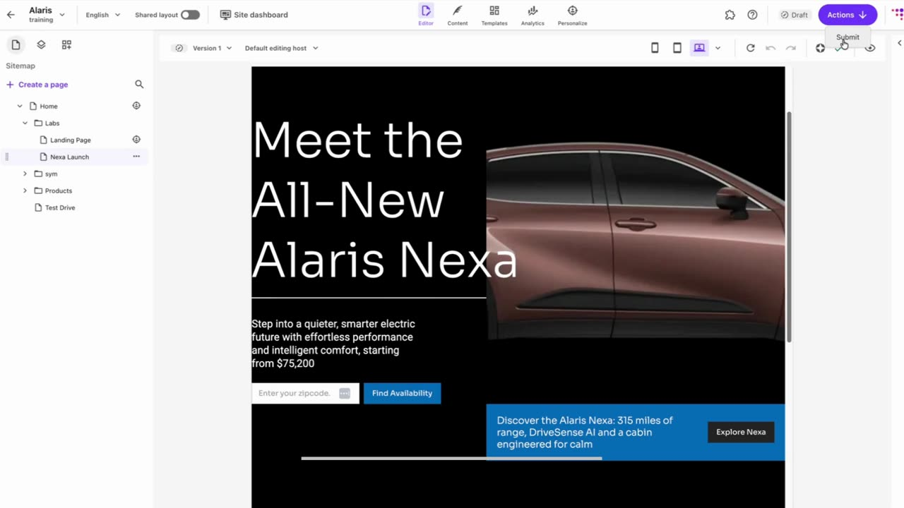

Video · Software tutorial · 3 min
Create a page with an AI assistant.
A three-minute tutorial showing marketers how to connect an AI assistant to SitecoreAI, describe a page in plain language, and review the draft it builds, all without leaving their own content.
- AudienceMarketers & content authors
- My roleScript, storyboard & production
- FormatNarrated screen recording + motion graphics
- Length2:57
Watch
The video
The framework
Four steps, one mental model
Before any clicking, the video introduces a simple four-step model. Learners get the whole journey up front, then watch each step in action, so the details have something to attach to.
- 01 · Connect
Link the assistant
Connect the assistant to SitecoreAI and set tool permissions, so it works with real content.
- 02 · Ask
Plain language
Brief it like a colleague: look up the product pages, then ask for a new landing page.
- 03 · Act
Build the draft
The assistant picks the right SitecoreAI tools, creates the page, and fills in its fields.
- 04 · Review
Stay in control
Open the draft in the page builder, check it, refine it, and decide what happens next.
Design choices
Built for busy marketers


The video stays under three minutes and follows one realistic task from start to finish: launching a page for a new electric vehicle. Short enough to watch at the moment of need, specific enough to copy.
It also models good habits along with the steps. Permissions are set on purpose, the assistant's work is checked rather than trusted blindly, and a person makes the final decision.